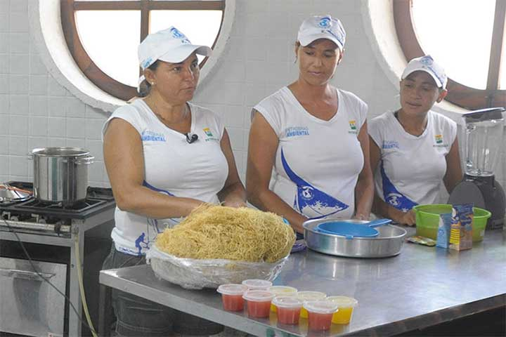
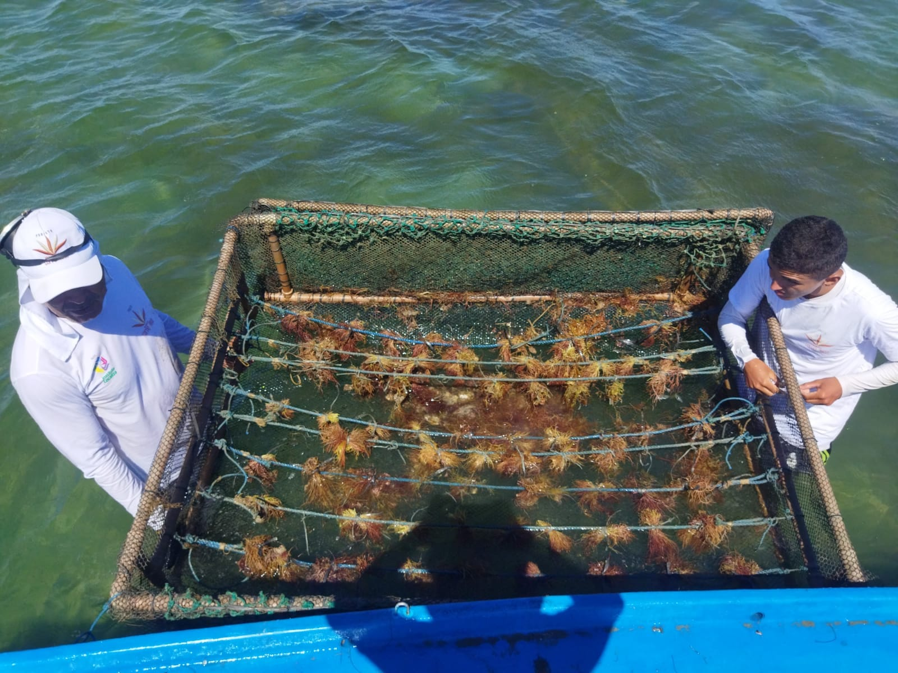
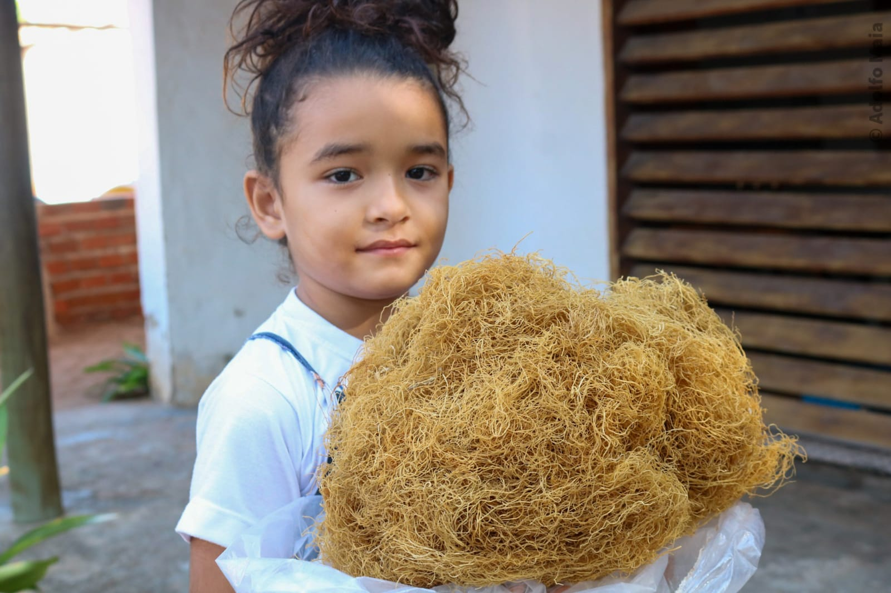
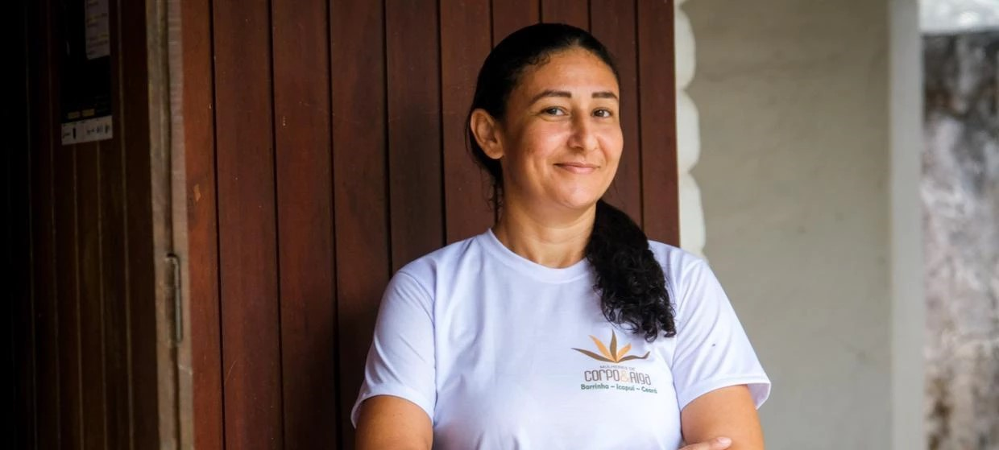

Notícias
“Mudou Nossa Forma de Viver”

Foto: Mulheres Algueiras
Quando catava as algas para vender o quilo a um real, durante as férias na praia, Aldneide Silva, 41, nem imaginava que a mesma quantidade valeria, hoje, R$ 200. “A gente nem sabia pra que servia, vendia pra atravessadores. Aí depois nós começamos a entender que tínhamos que plantar, cultivar, e vender diretamente”, diz ela, uma das pioneiras do projeto Mulheres de Corpo e Alga.
Capacitação em Icapuí: Mulheres Assumem o Protagonismo
Foto: Arquivo Pessoal
Recentemente, uma oficina de capacitação ocorreu na comunidade de Icapuí, Ceará, para ensinar técnicas sustentáveis de cultivo e processamento de algas. A iniciativa visa empoderar mulheres da região, garantindo que a cadeia de produção seja sustentável e benéfica para todas as envolvidas. "Aprendemos sobre a importância de valorizar o nosso trabalho e como podemos nos organizar melhor", comenta Maria José, uma das participantes.
Do Cultivo ao Mercado: O Crescimento das Algueiras de Icapuí
Foto: Arquivo Pessoal
As mulheres algueiras da Praia de Barrinha, em Icapuí, têm encontrado no cultivo de algas uma forma sustentável de subsistência. "É uma atividade que respeita o meio ambiente e que permite que a gente viva melhor", explica Josilene Costa, participante comunitária do projeto. Além da venda, as algueiras produzem sabonetes, geleias, entre outros produtos que estão ganhando o mercado nacional.
Planejamento e Futuro: Novos Horizontes para as Algueiras
Foto: Arquivo Pessoal
Em um encontro realizado no último mês, as mulheres algueiras discutiram novas estratégias para aumentar a produção e diversificar os produtos derivados das algas marinhas. A proposta é expandir o cultivo e buscar novas parcerias com empresas de cosméticos e alimentação saudável. "Queremos mostrar para o mundo o poder da nossa comunidade e da mulher nordestina", finaliza Joana Silva, coordenadora do projeto.
Entrevista
Foto: Arquivo Pessoal
Em uma entrvista como Aldeneide Maria da Silva uma das fundadoras e responsável pelo projeto, Aldeneide falou sobre a história das Mulheres Algueiras e enfatizou sobre a importância desse projeto em sua vida e de seus familiares, esse grupo de pessoas da comunidade da barrinha tem o intuito de criar produtos e alimentos, utilizando algas marinhas.
Por sua vez a moradora da comunidade da barrinha, falou sobre o futuro do projeto, onde ela demostrou a vontade que o projeto continuasse com o mesmo amor que as pioneiras do grupo tiveram.
para ler a Entrevista completa clique aqui!⇣